BOKATO
La mejor opción para tomar un buen café.
Se ubica en: San Marcos, Tarrazú y Santa María, Dota“Donde la ruta hace tus sueños realidad”
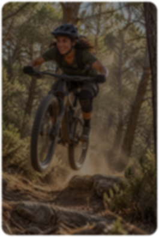
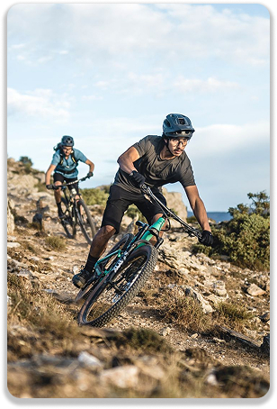
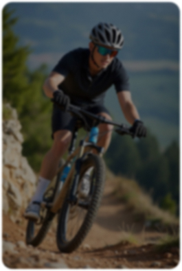
Nacida en el corazón de las montañas de la Zona de los Santos, Quetzal Racing surgió en 2018 como una iniciativa de un grupo de ciclistas locales apasionados por los senderos de cafetales, bosques nubosos y ascensos exigentes de Santa María de Dota, Tarrazú y León Cortés.
Inspirada en el resplandor y la libertad del quetzal que habita estas alturas, la organización comenzó con pequeñas rodadas comunitarias que rápidamente evolucionaron hasta convertirse en el desafío de ciclismo de montaña más emblemático de la región.
Hoy, Quetzal Racing no solo busca poner a prueba la resistencia física y técnica de cada corredor frente al terreno quebrado de los cerros costarricenses, sino también promover el turismo sostenible, la conservación ambiental y el orgullo por la cultura cafetalera local.
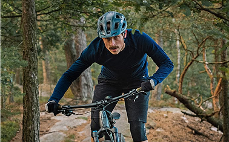
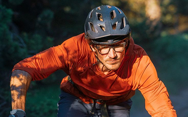
Es el valle dorado custodiado por la sombra imponente del Cerro Chirripó, la tierra donde nacen las leyendas y se forjan los verdaderos titanes del ciclismo. Partiendo desde el calor vibrante del Valle de El General, los ciclistas deberán abrirse paso hacia las faldas del coloso, enfrentando un terreno indomable de ríos caudalosos, piedras sueltas y ascensos interminables donde el clima cambia del fuego al hielo en cuestión de kilómetros. Cruzar este valle hacia las alturas es enfrentar el juicio final de la montaña, el escenario definitivo donde solo los más fuertes logran tocar el cielo.
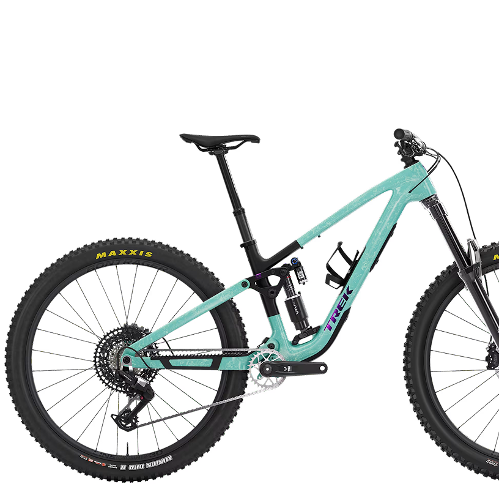
Es un suspiro frío en las alturas, un reino místico de bosques nubosos y robles centenarios donde el tiempo parece haberse detenido. Sus senderos técnicos y escaladas implacables atraviesan el hogar del quetzal, exigiendo no solo piernas de acero, sino un espíritu inquebrantable frente al viento helado y la altura. Pedalar por Dota es sumergirse en la naturaleza más salvaje y poética del país, donde cada curva revela un paisaje que quita el aliento, literalmente.
Es el santuario donde la montaña abraza las nubes y el aroma del café más fino del mundo despierta el alma de los valientes. Sus caminos son un laberinto esmeralda de pendientes infinitas que ponen a prueba el corazón desde la primera pedalada. Aquí, el silencio de los valles profundos solo se rompe por el rugido de las llantas sobre el lastre, recordándole a cada ciclista que en esta tierra la gloria se gana gota a gota, entre la neblina matinal y el esfuerzo puro.
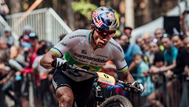
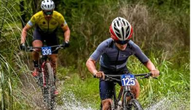
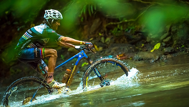
PERFECTAS PARA TI
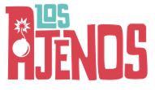
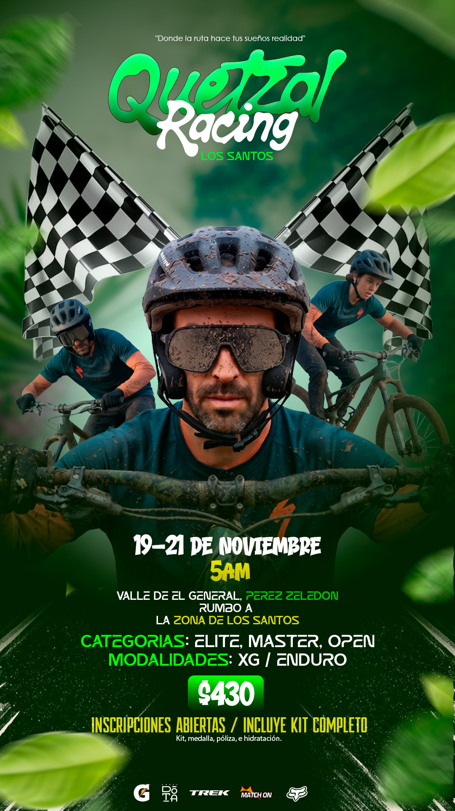
Las inscripciones estarán abiertas hasta el 10 de noviembre o hasta agotar los cupos disponibles por categoría.
Incluye el jersey oficial Quetzal Racing, número de competidor con chip de cronometraje, medalla finisher, póliza de seguro, asistencia mecánica básica y puestos de hidratación en ruta.
Se permiten bicicletas de montaña (MTB) rígidas o de doble suspensión en buen estado mecánico, con frenos de disco operativos.
Sí, contamos con una categoría recreativa especial para E-Bikes de pedaleo asistido.
La entrega de kits se realizará el 18 de noviembre de 10:00 AM a 7:00 PM en la Fan Zone oficial en San Isidro de El General.
Puedes descargar cada archivo GPX directamente en la sección "La Ruta" de esta página seleccionando la etapa correspondiente.
Sí, habilitaremos zonas de parqueo vigilado y servicio de guardarropa gratuito para los corredores inscritos desde las 4:00 AM.
¡LLENA ESTE FORMULARIO!